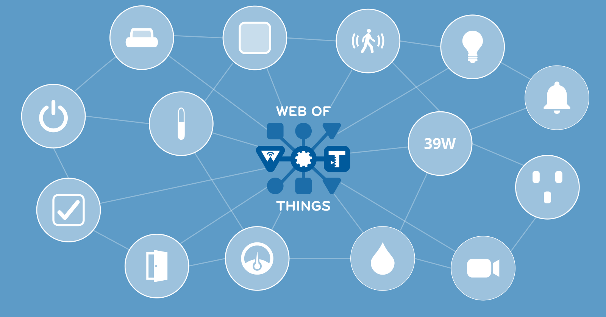

W3C Web of Things

The Web of Things (WoT) is defined by a collection of specifications standardised by the World Wide Web Consortium (W3C).
According to the W3C, "the Web of Things (WoT) seeks to counter the fragmentation of the IoT by using and extending existing, standardized Web technologies. By providing standardized metadata and other re-usable technological building blocks, W3C WoT enables easy integration across IoT platforms and application domains."
The Web of Things is to the Internet of Things what the World Wide Web is to the Internet.
It gives URLs to physical devices in the real world to make them linkable, provides a data model to describe them and a communication protocol to interact with them.
The Web of Things can be used as a unifying application layer for the Internet of Things, linking together multiple underlying IoT protocols using existing web technologies.
The core normative specifications (standards) which define the Web of Things are:
- WoT Architecture - Describes the building blocks of the Web of Things and how they fit together
- WoT Thing Description - Defines an information model and JSON-based serialisation format for describing the capabilities of connected devices in a protocol agnostic way
- WoT Discovery - Defines various mechanisms for discovering web things, including a Thing Description Directory
- WoT Profiles - Defines sets of prescriptive constraints called "profiles" to enable out-of-the-box interoperability between conformant web things and their consumers
There are also some informative notes which provide additional guidance:
These specifications were designed to fulfill a collection of Use Cases and Requirements originally defined by the Web of Things Interest Group.
In addition to the specifications written by the WoT Working Group, there is a specification being incubated by the Web Thing Protocol Communtiy Group which defines a common protocol for the Web of Things called the Web Thing Protocol: